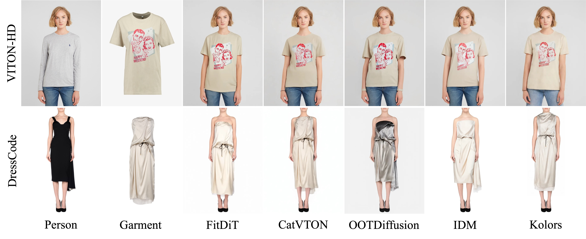

Although image-based virtual try-on has made considerable progress, emerging approaches still encounter challenges in producing high-fidelity and robust fitting images across diverse scenarios. These methods often struggle with issues such as texture-aware maintenance and size-aware fitting, which hinder their overall effectiveness. To address these limitations, we propose a novel garment perception enhancement technique, termed FitDiT, designed for high-fidelity virtual try-on using Diffusion Transformers (DiT) allocating more parameters and attention to high-resolution features. First, to further improve texture-aware maintenance, we introduce a garment texture extractor that incorporates garment priors evolution to fine-tune garment feature, facilitating to better capture rich details such as stripes, patterns, and text. Additionally, we introduce frequency-domain learning by customizing a frequency distance loss to enhance high-frequency garment details. To tackle the size-aware fitting issue, we employ a dilated-relaxed mask strategy that adapts to the correct length of garments, preventing the generation of garments that fill the entire mask area during cross-category try-on. Equipped with the above design, FitDiT surpasses all baselines in both qualitative and quantitative evaluations. It excels in producing well-fitting garments with photorealistic and intricate details, while also achieving competitive inference times of 4.57 seconds for a single 1024x768 image after DiT structure slimming, outperforming existing methods.